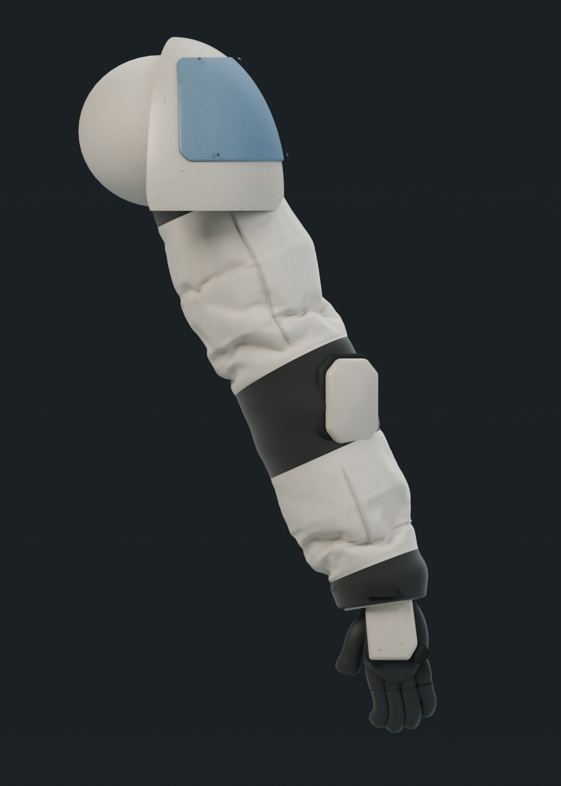
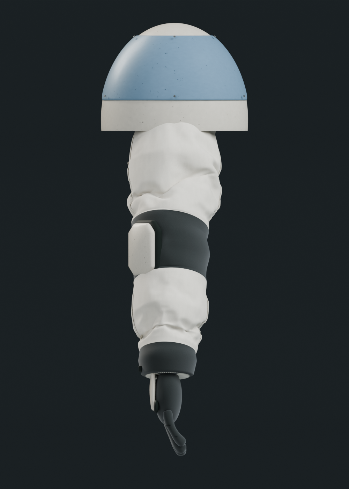
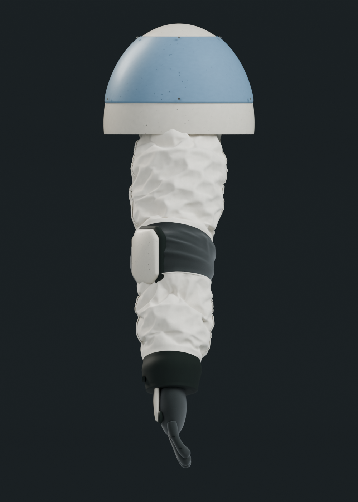

Actual Blender renders at equal framing, illumination and ivory fabric shader settings. The accepted character remains unchanged. Both candidates are rejected for rollout, agreed by implementation and parent visual review. Full conditions and limitations: study record.
Labelled comparison sheet · supplied reference · accepted character gallery · reopened validation
| Accepted cleanup baseline | Candidate 1: broad compression | Candidate 2: localized compression |
|---|---|---|
 | ||
 |  | |
| Accepted source a298b68. Long diagonal creases remain a known style limitation. | Applied study source · metrics Natural folds, but broad/sparse; smooth elbow flex and exposed cuff binding. | Applied study source · metrics Elbow and cuff improved; dense crumpling loses the padded EVA appearance. No rollout. |